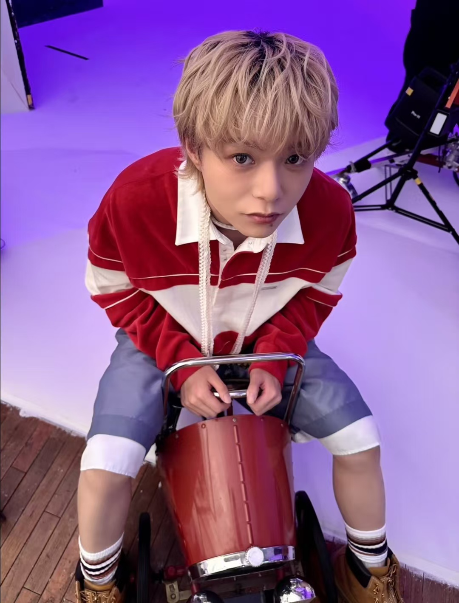
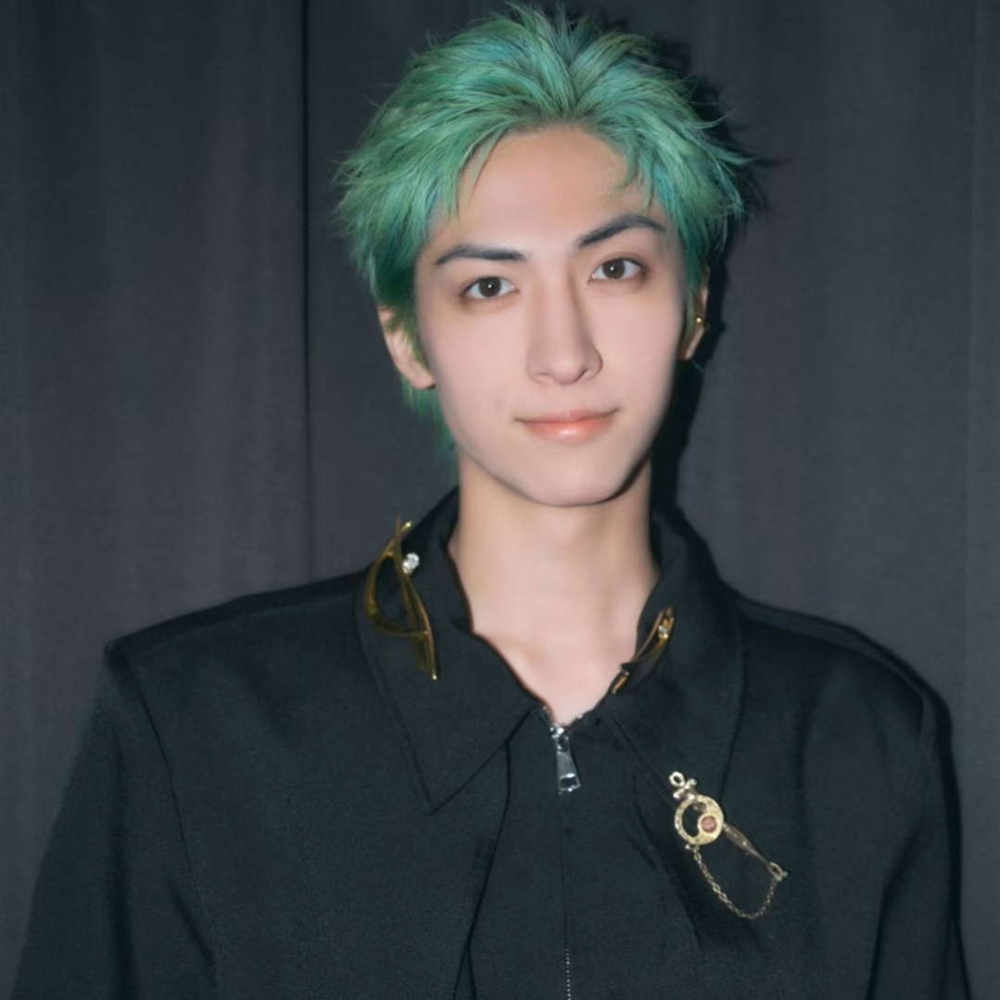
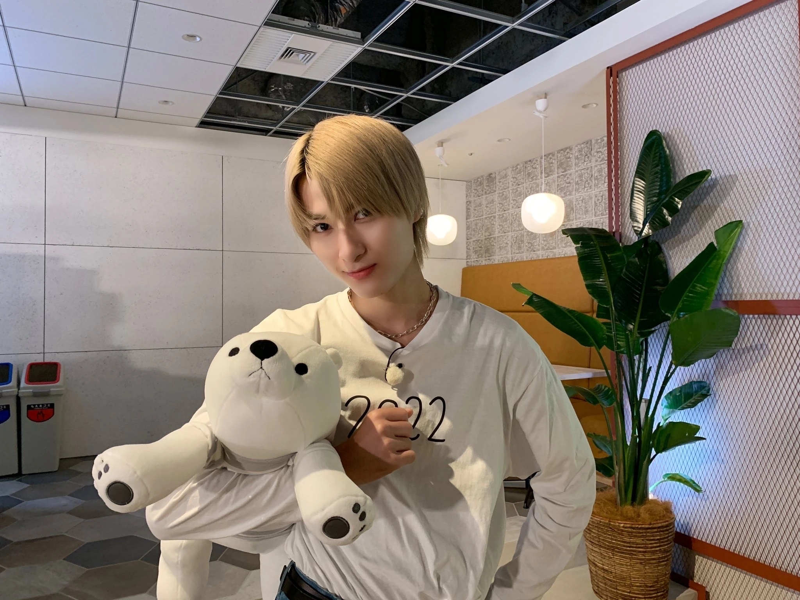
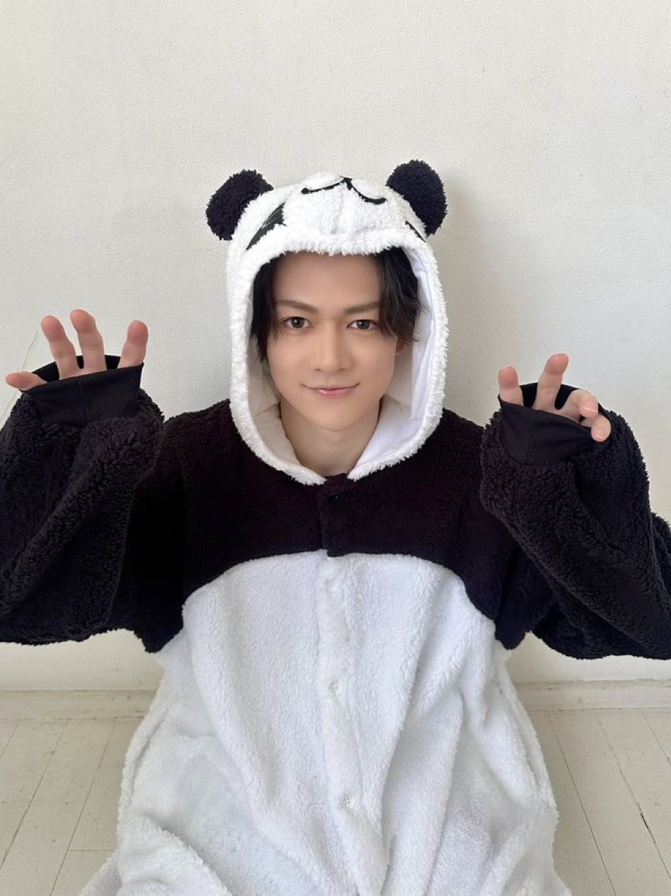
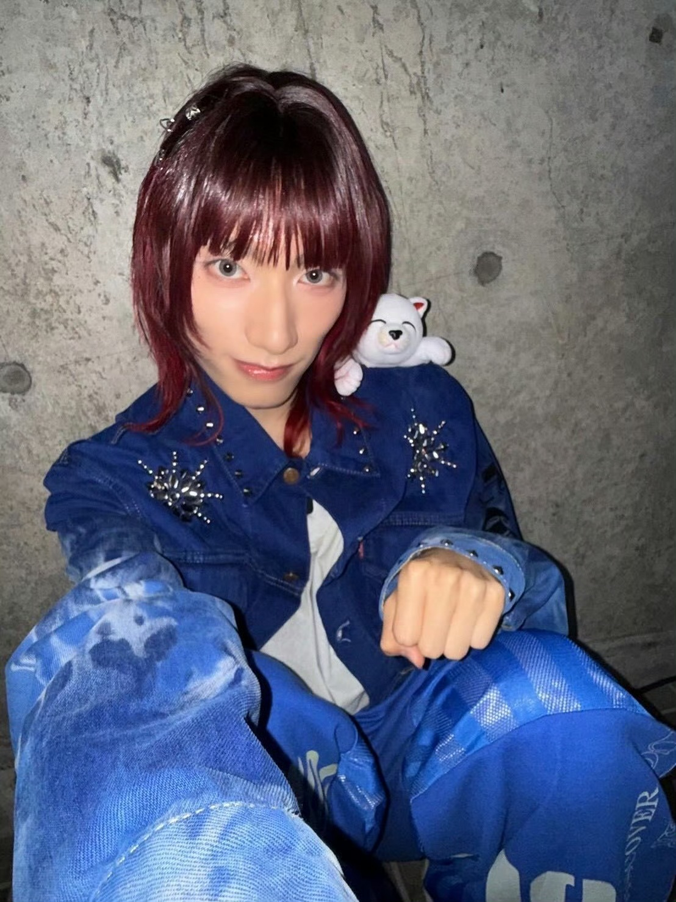
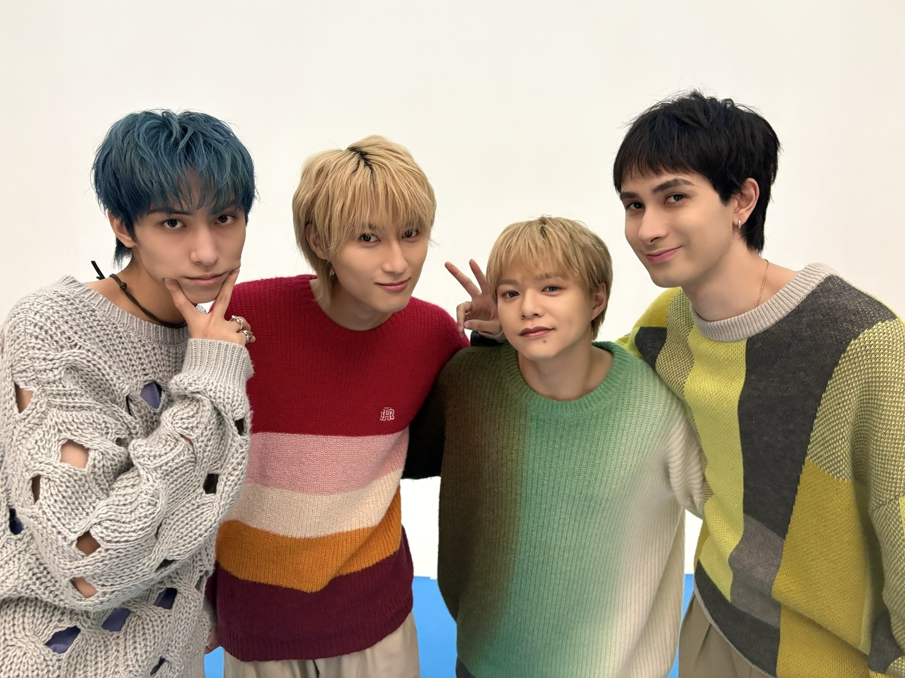
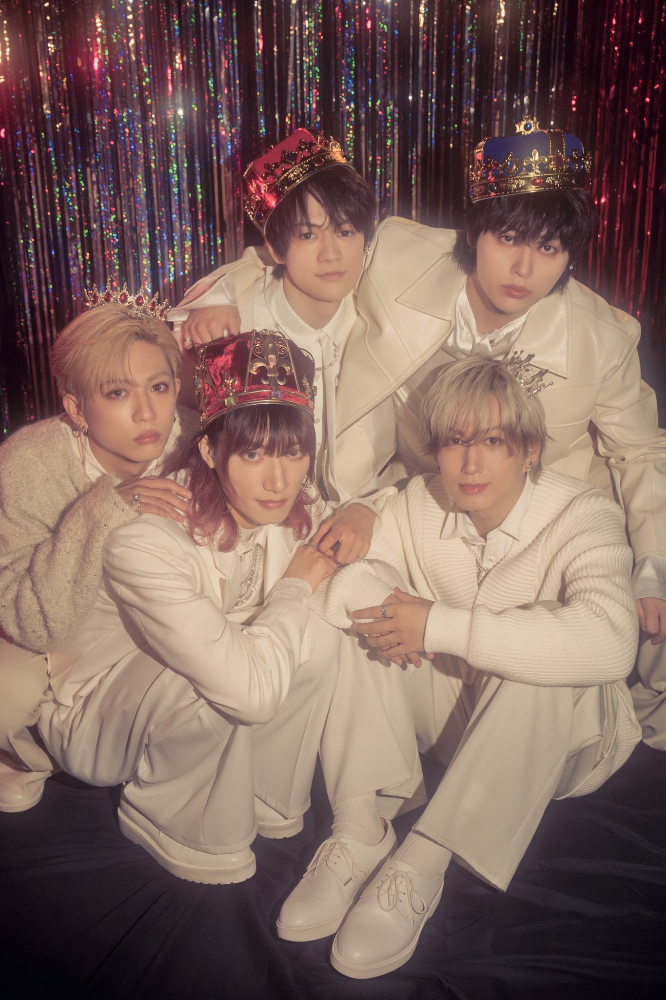

成立于2015年9月27日，今年即将迎来结成的第11周年，11年来无成员变动。2024年3月签约PONY CANYON（波音佳丽唱片公司）主流出道。SUPER★DRAGON由九个团结友爱、看似可怕实则可爱、低调内敛但业务能力过硬的帅哥组成。作品自22年后基本由成员构思并作词作曲，团内的B-boxer和rapper都很拿得出手，爱听rap的一定不要错过。表演形式为唱跳分离（实则唱分离跳没分离hhh，看练习室就能感受到了）。粉丝名21年定为Blue，团应援色蓝色，成员无代表色但有动物塑。
SUPER★DRAGON里都有哪些成员呢？

动物塑: 🐶狗狗
定位: 核心超稳定舞担
生日: 1999.01.29
身高: 164.5
个人简介: 团妈但团欺，名副其实的带大了团里的孩子们，但没有讨厌的大人架子，特别温柔。舞蹈非常厉害，核心力量超强，是舞蹈队长，擅长料理，痴迷红茶，对红茶的了解已经完全称得上专业。喜欢玩游戏，最近开设了游戏直播栏目おれはれお（我是reo），感兴趣可以在B站搜索相关物料。

动物塑: 🦁狮子
定位: 音色非常独特的vocal
生日: 2000.02.27
身高: 185+(具体多高实在无从考证但绝对超过官方数据182)
个人简介: 天然呆帅哥，如果看过《三年a班》也许会对这位帅哥有印象，音色也帅。超级潮男，对时尚很有研究，会设计演出服装，会作词作曲。非常成熟靠谱，但脾气很好，个人觉得是团队主心骨般的存在，是会为了让团变得更好而想很多的人。
动物塑: 🐰兔子
定位: vocal&rap担
生日: 2000.05.04
身高: 181
个人简介: 土耳其混血！可以叫他酱，团内许多歌他都参与了作词作曲，也会作为独立音乐人Jjean发布自己的原创，风格偏电子，但是听起来很舒服，不禁让人感叹他简直是天才啊！造梗能手，很有综艺效果，盘靓条顺，4个月大就已登上杂志封面，童星来的，虽然是vo组但舞蹈也很好，喜欢全能型的有福了。

动物塑: 🐻熊
定位: 大框架舞担
生日: 2001.10.12
身高: 182.2
个人简介: 热爱足球，正宗猫奴，超级喜欢吃冰淇淋！会进行刨冰巡礼，好可爱吧。电波系（指不按常理出牌），对待一切事物都非常认真，但又有些调皮，反差感十足，学历很高（青山学院大学），记忆力很强，种种叠加被队友认证为psychopath（褒义的？神经病，我理解为一种天才病），大学生+1。

动物塑: 🐼熊猫
身高: 171
定位: 小个子热血舞担
生日: 2003.02.17
个人简介: 是不折不扣的铁道宅（此人设十分稀有），十年如一日热爱电车，单纯善良，物欲极低，人生是由50%的电车和50%的超级龙组成，会对喜欢的东西非常执着（例如电车和超级龙），有点急性子。还会弹钢琴哦！完全宝藏男孩，队友评价他是“还没有被挖掘到的钻石”，大学生+2。
动物塑: 🐹仓鼠
身高: 173
定位: vocal/Bbox/rap都来
生日: 2003.02.27
个人简介: 声音大胆子小，完全是胆小如鼠的具象化。长了一张萌脸但其实是个低音炮，很会Bbox，参加过beatbox比赛，团曲里的Bbox部分完全可以作为killing part，听起来很爽，推荐Omaejanai和So woo。虽然是低音炮但其实音域很宽，假声、转音什么的统统拿下。喜欢把自己打扮的漂漂亮亮的，精致男孩一枚。
动物塑: 🐨考拉
身高: 180
定位: 纯正vocal
生日: 2003.06.02
个人简介: 超爱吃肉，最强大脑，毕业于日本庆应义塾大学心理学系（也是很牛的一位，有望竞争爱豆学历高峰），聪明强大但傲娇。作为主唱非常稳，同时舞蹈也很强，身体灵活柔软，有不达目标不罢休的超强毅力做什么都会成功的，慕强批有福了，大学生+3。
动物塑: 🐧企鹅
身高: 171
定位: 纯正rap担
生日: 2004.04.15
个人简介: 年龄小但是思想异常成熟，rap词坚持自作，语言表达能力极强，很会吐槽但心思细腻，刀子嘴豆腐心。24年以rapper身份solo出道，名为cuegee，现场很强，rap作品很好听，推荐Straight up和Time won't wait. 作为爱豆兼rapper有着打破rapper界地上以及地下对彼此偏见的宏伟理想！皮囊帅气灵魂也很有趣的一位。

动物塑: 🐱猫猫
身高: 176
定位: 柔软舞担+可爱担当
生日: 2004.04.28
个人简介: 小时候完全小女孩，是以女孩子的身份被星探挖掘的！本体是猫猫，特别特别萌，很会穿搭，最被大家宠爱的末子，会摄影，还会画画，画非常有自己的风格，愿称之为艺术家...还很会做料理，话不多但非常靠谱，会设计巡演周边，散发着一种淡淡的就会顺顺的感觉，大学生+4

由四个年上大哥哥组成（左☞右：古川毅tsuyoshi、饭岛飒Hayate、志村玲於reo、酱海渡jean）
年上感十足，是靠谱的大哥哥们，作品风格偏向成男风味，推荐Good Times&Tan Lines，这首很美味，早期作品推荐ARIGATO，四个人都有唱，听得人心暖暖的。
点击即可收听哦！
网易云链接:
QQ音乐链接:

由五个年下弟弟们组成（左☞右：上排伊藤壮吾sougo、松村和哉tomoya；下排田中洸希koki、柴崎楽raku、池田彪马hyoma）
简介:15年出道最小的孩子只有11岁，所以小时候孩子们唱歌都是童声，GETSUYOUBI这首就是五个孩子在唱歌呀；Athena是由成员松村和哉tomoya作词的，很会写词的一位。
网易云链接:
QQ音乐链接:
tips：超级龙的live一般包括每年不同主题的live tour、dra fes（超级龙的音乐节简称：龙乐节），还有release event也就是新专辑发布活动，又称为丽丽一杯，以及一些音乐活动的出场
2026.07.16
「Call Me Asap / NUMBER」発売記念リリースイベント@川崎CLUB CITTA YouTube生配信！
2026.04.11
マイナビ presents The Performance拼盘演唱会SUPER★DRAGON部分（地上波）
2026.04.19
SUPER★DRAGON LIVE TOUR 2026「Studio」
2025.09.27超级龙十周年
SUPER★DRAGON LIVE TOUR 2025「SUPER X」
一定要看的十周年专辑诞生记录（不是live但想让大家看所以放进来了）
2024.07.13
推荐一些小红书博主：狐の呓语和苹果汁煎枇杷（一些入坑实用教程）、游师傅的烤鱼铺和九.H（考古幼龙）